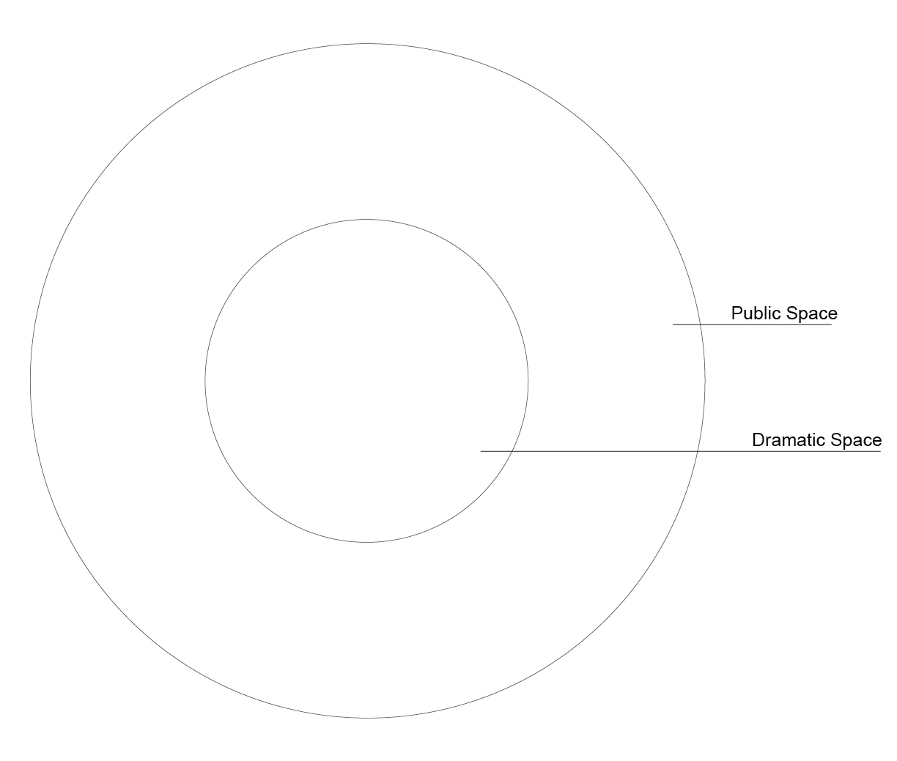
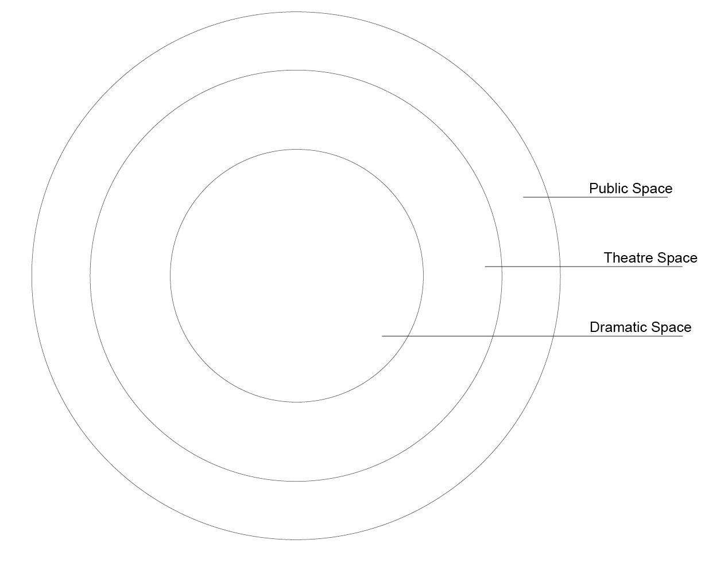
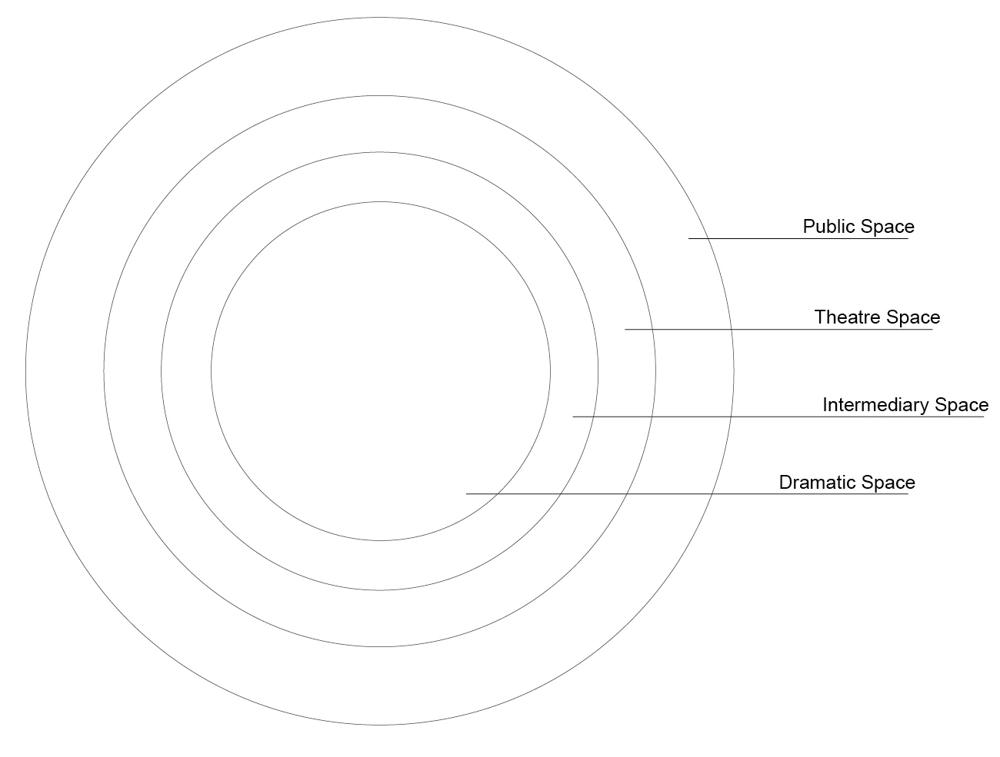
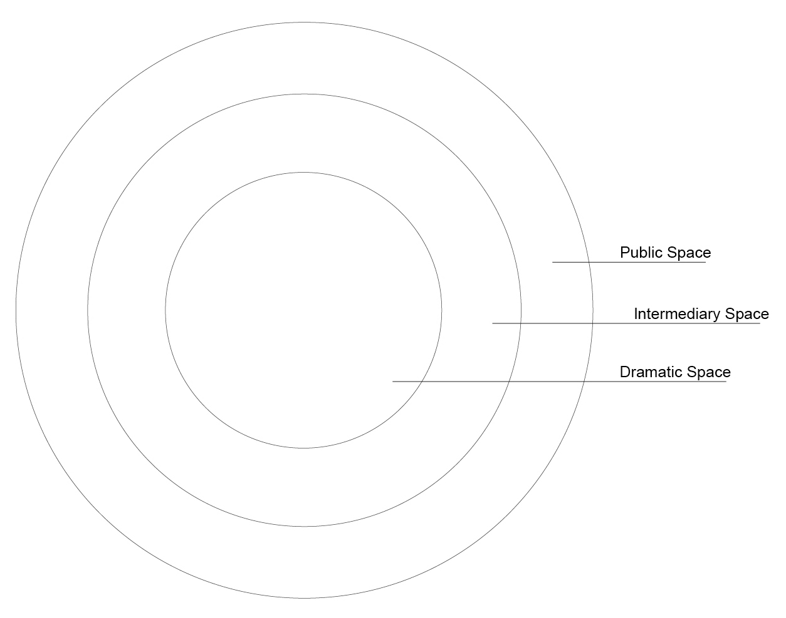
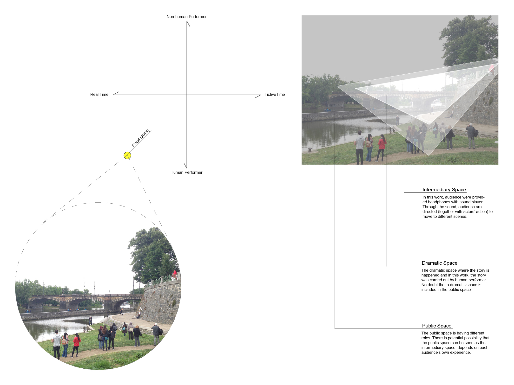

Until now I haven not mentioned about the space in the whole research process yet. But undoubtedly, in every performative work, space is a fundamental element. I cannot think of any work that is presented without a/the space. The space here is not only the space on the stage, but it is broader and much more complex. As Professor Radivoje Dinulović wrote However, we must always keep in mind the fact that the stage-auditorium space is only one of the elements in a complex physical structural system of the theatre.
[2] What a spectator experience in a performative work should be a sum of all experiences (s)he has prior to, during and after the performance.
I tried to find a way to discuss about space and of course the discussion should also relate to the analysis and the quadrant that I have developed. I visualize some thoughts about spatial layers in a whole performative experience.
There are four different spaces: public space, theater space, dramatic space and intermediary space. These spaces can form four different spatial types as shown in Diagram 10 to 13:


Diagram 10. (Left) Two Layers: Public Space & Dramatic Space
Dagram 11. (Right) Three Layers: Public Space , Theater Space & Dramatic Space


Diagram 12. (Left) three Layers: Public space, Intermediary Space & Dramatic Space
Dagram 13. (Right) Four Layers: Public space, Theater Space, Intermediary Space & Dramatic Space
After developing this four diagrams as prototypes, I tried to analyze one project by it. and realized these prototype diagram still need lots of improvements. This is a direction that I would like to continully work further.

Diagram 14. Analyse One Project by Diagram 13